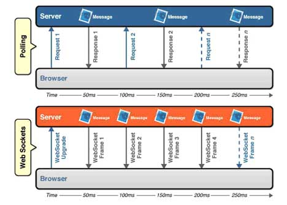
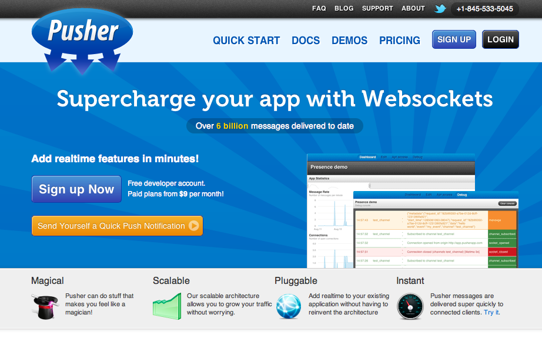
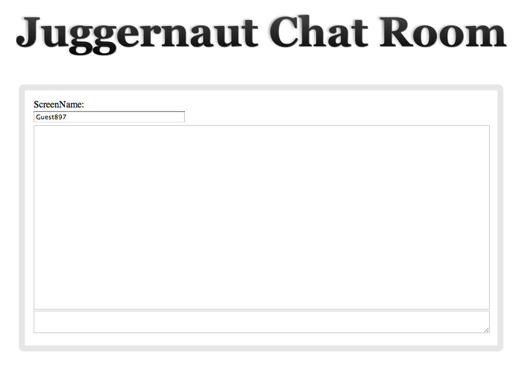

Getting Started with
WebSockets
Nick Mulder
t: nickmulder
TorontoRB

| space, → | next slide |
| ← | previous slide |
| d | debug mode |
| ## <ret> | go to slide # |
| c | table of contents (vi) |
| f | toggle footer |
| r | reload slides |
| z | toggle help (this) |
Source: http://dev.w3.org/html5/websockets/

Think about a webpage that requires frequent updates; For example think about a page that provides current stock prices, or scores for sports games, or a live blog event. .notes With polling, the browser sends HTTP requests at regular intervals and immediately receives a response. .notes With Push via WebSockets the browser sets up the socket, then the server can send messages when ever it needs to.
 Example taken from: http://soa.sys-con.com/node/1315473
GET /PollingStock//PollingStock HTTP/1.1
Host: localhost:8080
User-Agent: Mozilla/5.0 (Windows; U; Windows NT 5.1; en-US; rv:1.9.1.5) Gecko/20091102 Firefox/3.5.5
Accept: text/html,application/xhtml+xml,application/xml;q=0.9,*/*;q=0.8
Accept-Language: en-us
Accept-Encoding: gzip,deflate
Accept-Charset: ISO-8859-1,utf-8;q=0.7,*;q=0.7
Keep-Alive: 300
Connection: keep-alive
Referer: http://www.example.com/PollingStock/
Cookie: showInheritedConstant=false; showInheritedProtectedConstant=false;
showInheritedProperty=false; showInheritedProtectedProperty=false;
showInheritedMethod=false; showInheritedProtectedMethod=false; s
howInheritedEvent=false; showInheritedStyle=false; showInheritedEffect=false
HTTP/1.x 200 OK
X-Powered-By: Servlet/2.5
Server: Sun Java System Application Server 9.1_02
Content-Type: text/html;charset=UTF-8
Content-Length: 21
Date: Sat, 07 Nov 2009 00:32:46 GMTnow consider taking this up to 100,000 req/sec; thats 665 Mbps for our polling overhead, and 1.52 Mbps for the push overhead
Polling Request/Response Header size ~ 871 bytes overhead per poll
6,968,000 bits per second... 6.6 Mbps
16,000 bits per second! 0.015 Mbps
[Constructor(in DOMString url, in optional DOMString protocols)]
[Constructor(in DOMString url, in optional DOMString[] protocols)]
interface WebSocket {
readonly attribute DOMString url;
// ready state
const unsigned short CONNECTING = 0;
const unsigned short OPEN = 1;
const unsigned short CLOSING = 2;
const unsigned short CLOSED = 3;
readonly attribute unsigned short readyState;
readonly attribute unsigned long bufferedAmount;
// networking
attribute Function onopen;
attribute Function onmessage;
attribute Function onerror;
attribute Function onclose;
readonly attribute DOMString protocol;
void send(in DOMString data);
void close();
};
WebSocket implements EventTarget; [Constructor(in DOMString url, in optional DOMString protocols)]
[Constructor(in DOMString url, in optional DOMString[] protocols)] readonly attribute DOMString url; // ready state
const unsigned short CONNECTING = 0;
const unsigned short OPEN = 1;
const unsigned short CLOSING = 2;
const unsigned short CLOSED = 3;
readonly attribute unsigned short readyState; // networking
attribute Function onopen;
attribute Function onmessage;
attribute Function onerror;
attribute Function onclose; void send(in DOMString data);
void close(); [Constructor(in DOMString url, in optional DOMString protocols)]
[Constructor(in DOMString url, in optional DOMString[] protocols)]
interface WebSocket {
readonly attribute DOMString url;
// ready state
const unsigned short CONNECTING = 0;
const unsigned short OPEN = 1;
const unsigned short CLOSING = 2;
const unsigned short CLOSED = 3;
readonly attribute unsigned short readyState;
readonly attribute unsigned long bufferedAmount;
// networking
attribute Function onopen;
attribute Function onmessage;
attribute Function onerror;
attribute Function onclose;
readonly attribute DOMString protocol;
void send(in DOMString data);
void close();
};
WebSocket implements EventTarget; // Introduced in DOM Level 2:
interface EventTarget {
void addEventListener(in DOMString type,
in EventListener listener,
in boolean useCapture);
void removeEventListener(in DOMString type,
in EventListener listener,
in boolean useCapture);
boolean dispatchEvent(in Event evt)
raises(EventException);
};
ws = new WebSocket("ws://0.0.0.0:8080/websocket");
ws.onmessage = function(evt) { console.log(evt.data); };
ws.onclose = function() { console.log("socket closed"); };
ws.onopen = function() {
console.log("connected...");
ws.send("Hello Server!");
};
require 'em-websocket'
EventMachine::WebSocket.start(:host => "0.0.0.0", :port => 8080) do |ws|
ws.onopen { ws.send "Hello Client!"; }
ws.onmessage { |msg| ws.send "Pong: #{msg}"; }
ws.onclose { puts "\nWebSocket closed" }
end
#Output in JS Console
connected...
Hello Client!
Pong: Hello Server!
var pusher = new Pusher('API_KEY');
var myChannel = pusher.subscribe('MY_CHANNEL');
myChannel.bind('thing-create', function(thing) {
alert('A thing was created: ' + thing.name);
}); require 'pusher'
Pusher.app_id = 'APP_ID'
Pusher.key = 'API_KEY'
Pusher.secret = 'SECRET_KEY'
class ThingsController < ApplicationController
def create
@thing = Thing.new(params[:thing])
if @thing.save
Pusher['things'].trigger('thing-create', @thing.attributes)
end
end
end
// Javascript
var jug = new Juggernaut;
jug.subscribe("channel_name", function(data){
console.log("Got data: " + data);
});
// Ruby
Juggernaut.publish("channel_name", {:some => "data"})
Juggernaut.publish(["channel1", "channel2"], "foo")
<div id="chat_room" rel-channel-name="<%= channel_name %>"
rel-name="<%= room_name %>">
<label for="chat_name">ScreenName:</label>
<input type="text" name="chat_name" class="chat_name" value=""/ >
<div id="chat_window"></div>
<textarea class="chat_message" name="chat_message"></textarea>
</div>
$(document).ready(function(){
var channel_name = $('#chat_room').attr('rel-channel-name');
$('.chat_name').val('Guest' + Math.floor(Math.random()*1000));
juggernaut.subscribe(channel_name, receive);
$(document).bind('keypress', function(event){
if(event.which == 13) // Enter KeyPress
return send();
});
});
send = function(){
var payload = {room: $('#chat_room').attr('rel-name'),
from: $('.chat_name').val(),
msg: $('.chat_message').val()};
$.post('/chat/post', payload);
$('.chat_message').val('');
return false;
};
receive = function(data){
data = JSON.parse(data);
msg = $('<div>');
msg.append('<span>'+data['from']+' @ '+data['time']+': </span>');
msg.append(data['msg']);
if(data['from'] === $('.chat_name').val())
msg.addClass('self');
$('#chat_window').append(msg).scrollTop($('#chat_window').height());
};
match 'chat/post' => 'chat#post', :method => :post
match 'chat(/:room)' => 'chat#index', :method => :get class ChatController < ApplicationController
helper_method :channel_name, :room_name
def index
@title = "#{room_name} Chat Room"
end
def post
...
end
private
def channel_name
"#{room_name}-chat-room"
end
def room_name
params[:room] || 'Juggernaut'
end
end
def post
payload = {:from => params[:from],
:time => Time.now.strftime("%H:%M"),
:msg => params[:msg]}
Juggernaut.publish(channel_name, payload.to_json)
render :text => 'ok'
end var DetachedHead = function(name, options){
this.juggernaut = new Juggernaut();
this.channelName = 'display-' + name;
this.target = $('body');
var dh = this;
this.juggernaut.subscribe(this.channelName, function(data){
dh.loadView(data);
});
}; $.extend(DetachedHead.prototype, {
loadView: function(data){
this.target.html(data);
},
destroy: function(){
this.juggernaut.unsubscribe(this.channelName);
}
}); require 'rack/utils'
require 'juggernaut'
class DetachedHeadMiddleware
def initialize(app)
@app = app
end
def call(env)
status, headers, response = @app.call(env)
if env["HTTP_SENDTODETACHED"]
Juggernaut.publish(env["HTTP_SENDTODETACHED"], response.body)
[200, {}, ['Ok']]
else
[status, headers, response]
end
end
end
$.extend(DetachedHead, {
sendTo: function(name, target_url){
$.ajax({
type : "GET",
url: target_url,
beforeSend: function(xhr){
xhr.setRequestHeader('SendToDetached', 'display-' + name);
}
});
}
}); // In one browser
dh = new DetachedHead('main');
// In another browser
DetachedHead.sendTo('main', '/chat');